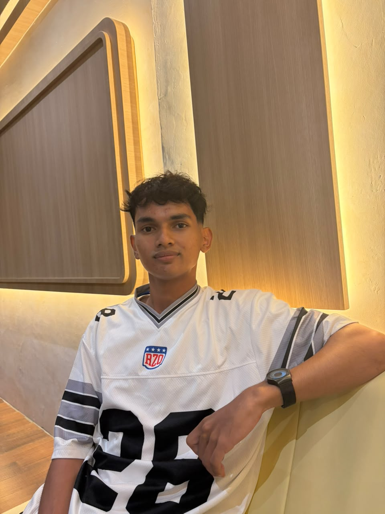
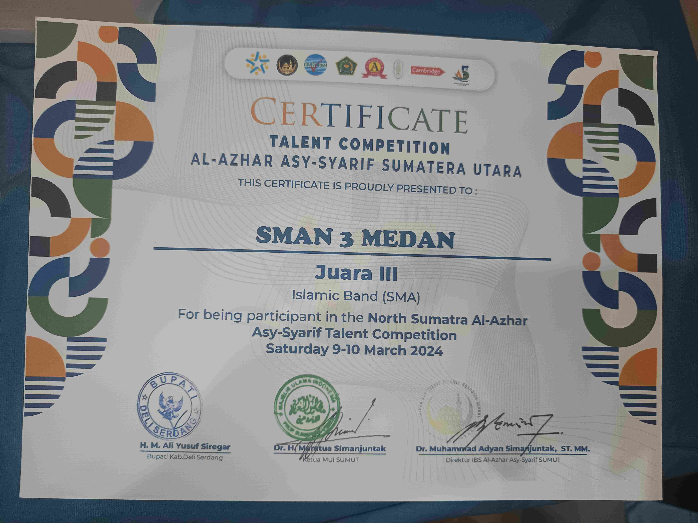
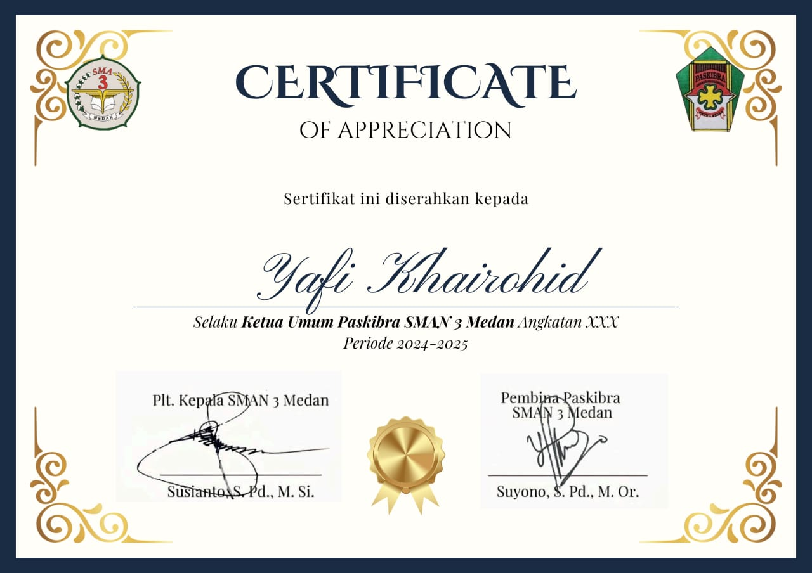
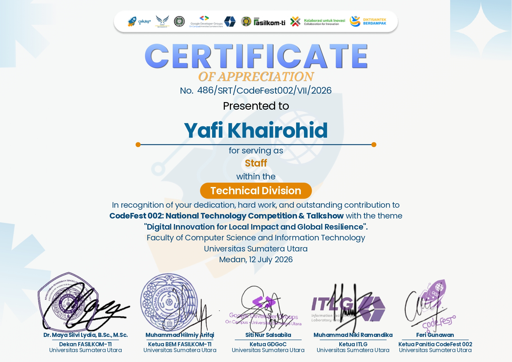
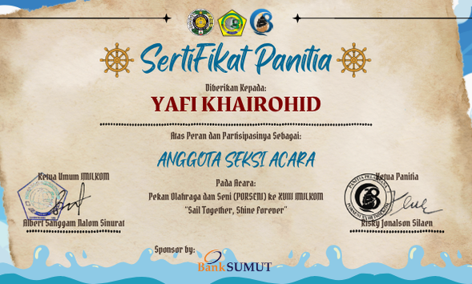
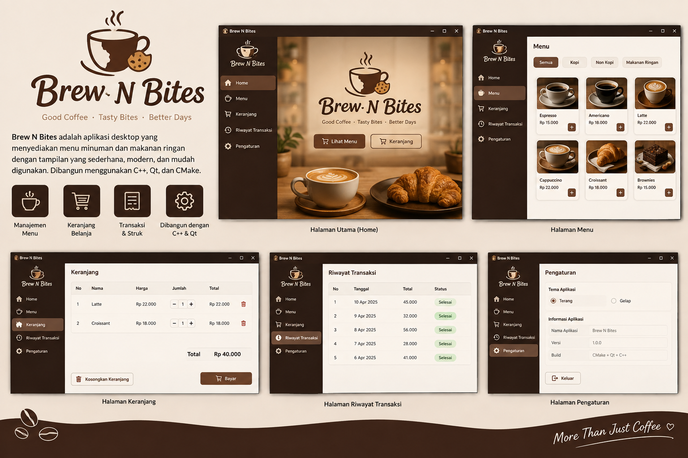
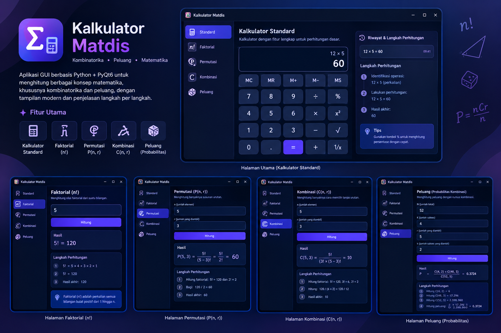

Nama: Yafi Khairohid
NIM: 251401034
Kom: A
Hobi: Nonton, Membaca komik, Belajar, dan Olahraga
(kalau lagi mood)
Motto hidup:
Gatau motto hidup atau ngga
Saya adalah seorang mahasiswa Ilmu Komputer dari
Universitas Sumatera Utara. Saya biasa dipanggil
Yap.
Saya berasal dari SMA Negeri 3 Medan. Saya suka bermain tenis meja
dan olahraga lainnya.
Salam kenal semuanya!

Jadwal Kuliah
| No | Kode | Mata Kuliah | SKS | Semester | Kelas | Tipe Kelas | Ruangan | Jadwal | Dosen | Jenis |
|---|---|---|---|---|---|---|---|---|---|---|
| 1 | MNJ1202 | Manajemen Keuangan |
3 | 2 | MR C | MKWU | GL 2A | Selasa, 10:30 - 13:00 | Mutia Fitri Chania SE, M.Si | Reguler |
| 2 | ILK3107 | Kecerdasan Buatan | 3 | 5 | A | Reguler | D-102 | Rabu, 10:30 - 13:00 |
Dr. Amalia S.T., M.T. Dr. Pauzi Ibrahim Nainggolan S.Komp., M.Sc. |
Reguler |
| 3 | ILK3102 | Etika Profesi | 2 | 5 | A | Reguler | D-104 | Jumat, 10:30 - 12:10 |
Dr. Eng Ade Candra S.T., M.Kom. Dr. Ir. Elviawaty Muisa Zamzami S.T., M.T., M.M., IPU |
Reguler |
| 4 | ILK2105 | Pratikum Basis Data |
1 | 3 | A | Reguler | - | Kamis, 12.10 - 13.50 | Insidini Fawwaz M.Kom | Reguler |
| 5 | ILK2110 | Pratikum Struktur Data |
1 | 3 | A | Reguler | - | Kamis, 10.30 - 12.10 | Insidini Fawwaz M.Kom | Reguler |
| 6 | ILK2107 | Pratikum Pemrograman Web |
1 | 3 | A | Reguler | - | Rabu, 13.50 - 15.30 | Nurrahmadayeni M.Kom | Reguler |
| 7 | ILK2108 | Wirausaha Digital | 2 | 3 | A | Reguler | D-106 | Jumat, 13:50 - 15:30 |
Dr. T. Henny Febriana Harumy S.Kom., M.Kom Dr. Fauzan Nur Ahmadi S.Kom., M.Cs |
Reguler |
| 8 | ILK2106 | Pemrograman Web | 3 | 3 | A | Reguler | C-104 | Kamis, 08:00 - 10:30 |
Dr. Dewi Sartika Br Ginting S.Kom., M.Kom Nurrahmadayeni M.Kom |
Reguler |
| 9 | ILK2109 | Struktur Data | 3 | 3 | A | Reguler | C-104 | Kamis, 13:50 - 16:20 |
Insidini Fawwaz M.Kom Anandhini Medianty Nababan S.Kom., M.T |
Reguler |
| 10 | ILK2104 | Basis Data | 3 | 3 | A | Reguler | D-103 | Rabu, 08:00 - 10:30 |
Insidini Fawwaz M.Kom Dr. Dewi Sartika Br Ginting S.Kom., M.Kom |
Reguler |
| 11 | SAE3108 | IELTS Preparation | 2 | 5 | BIKTI | MKWU | D-105 | Senin, 13:30 - 15:10 | Prof. Dr. Rudy Sofyan SS., M.Hum. | Reguler |
Prestasi

Juara 3 Islamic Band
Kompetisi antar sekolah tingkat kota tahun 2023-4 yang diselenggarakan oleh SMA Al-Azhar.
Pengalaman

Ketua Umum Paskibra
SMA 2023-2024Memimpin organisasi Paskibra serta mengoordinasikan anggota dalam berbagai kegiatan dan program kerja. Pengalaman ini membantu mengembangkan kemampuan leadership, komunikasi, dan kerja sama tim.

Panitia Codefest 002
Divisi Technical 2026Berperan dalam divisi technical pada kegiatan Codefest 002 serta membantu memastikan kebutuhan teknis selama kegiatan dapat berjalan dengan baik.

Anggota Seksi Acara
Seksi Acara 2026Bertanggung jawab dalam mengoordinasikan kegiatan departemen serta membantu menjalankan program kerja yang berkaitan dengan pembentukan karakter dan kebangsaan.
Projek


Kalkulator
Aplikasi GUI berbasis Python + PyQt6 untuk menghitung berbagai konsep matematika, khususnya kombinatorika dan peluang, dengan tampilan modern dan penjelasan langkah per langkah.
GitHub Proyek